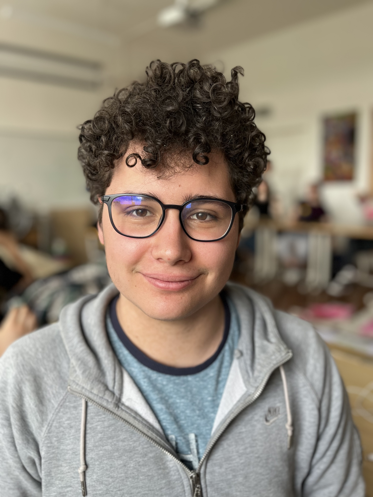

Osobní portfolio pedagoga
Tobiáš Trkan
Pedagog s vášní pro hudbu a historii. Věřím, že vzdělání je nejcennějším darem, který můžeme předat dalším generacím. Toto portfolio dokumentuje mou pedagogickou cestu — od praxí po vyučovací materiály.

Vaše fotografie
Doplňte src atribut obrázku svojí fotografií
Sekce portfolia
Oblasti mé práce
Pedagogické praxe
Záznamy, reflexe a zkušenosti z výukové praxe na školách.
Zobrazit
Pedagogika
Studijní práce, eseje a poznatky z pedagogických věd.
Zobrazit
Hudební výchova
Přípravy hodin, notové materiály a didaktické projekty.
Zobrazit
Dějepis
Výukové materiály a přípravy z výuky dějepisu.
Zobrazit
Životopis